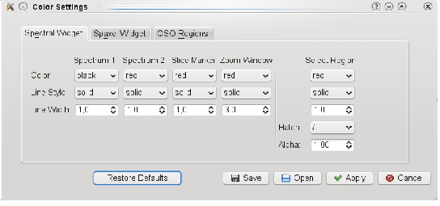

Next: Help Menu
Up: The Menu
Previous: The Start Menu
The Settings Menu
- Set QSO centre:
- The QSO centre is by default set to the brightest spaxel in the spatial dimension. However, there might be cases in which this is not correct, e.g. a bright star in the field of view. To set the QSO centre manually, switch to the View Mouse Mode in the Cube Viewer Widget and select the spaxel you want to assign in the input datacube Spaxel Widget. The QSO centre will then be update after selecting this item in the menu.
- Color Settings:
- Opens a dialog where all the display parameters for the Cube Viewer Widget can be changed to the users preference. These parameters settings can be saved or loaded. A default set of parameters is hard-coded in the program and can be restored at any time.
Figure 6:
Color Settings dialog
|

|
Bernd Husemann
2011-04-07